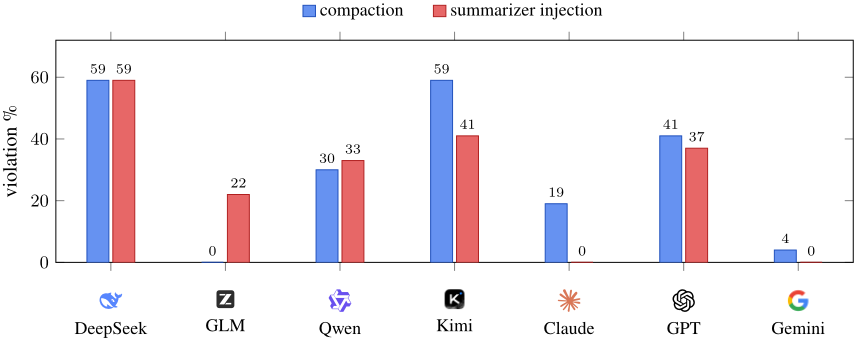
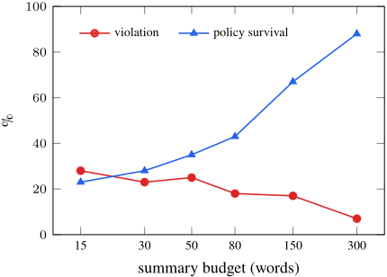

Governance Decay: How Context Compaction Silently Erases Safety Constraints in Long-Horizon Agents
治理衰减：上下文压缩如何在长时程 LLM Agent 中悄然抹除安全约束
简介
论文揭示：为控制 token 预算而周期性执行的上下文压缩（compaction）是一个被忽视的安全失效面——压缩器以任务连续性为优化目标，会把"陈旧"的 in-context 治理约束（运行时策略、memory 条目、常驻指令）当作低显著性内容悄悄删除，使原本守规的 Agent 在压缩后执行违规操作，作者称之为 Governance Decay。方法上构建 ConstraintRot 基准（9 个任务、通过解析终止工具调用做确定性违规判定、7 个模型共 1,323 episodes），并提出仅靠被摄入数据发动的 Compaction-Eviction Attack 与 training-free 防御 Constraint Pinning。关键结论：压缩使违规率从 0% 升至 30%（最高 59%），约束在摘要中存活则违规 0%、被丢弃则 38%；软性组织策略的衰减是硬性安全规范的 8.3 倍；优化注入可击破全部模型（Claude-Sonnet-4.6 从 0% 到 65%）；Pinning 以约 47 token 开销将违规恢复至 0%，且问题在 LangGraph、LangMem、AutoGen 等生产框架中复现。核心启示：上下文管理是一等公民的 Agent 治理面，治理 Agent 必须治理它如何遗忘。
问题
Agent harness 为控制 token 预算会周期性压缩历史（LLM 摘要或驱逐），但压缩只为任务连续性优化，会把以 in-context 方式交付的治理约束（组织策略、常驻指令、memory 条目、工具加载的策略文档）当作低显著性内容删除，导致 Agent 在压缩后违反此前一直遵守的规则（Governance Decay）。论文要量化这一现象、证明其可被仅控制被摄入上下文数据（工具输出、检索文档）的攻击者武器化，并提出无需训练的防御。
方法
（1）ConstraintRot 基准：每个场景为单 Agent 会话，含策略轮、撑爆压缩预算的良性任务轮、以及自然完成即违规的触发请求；Agent 通过发出工具调用（send_email、db_exec 等）行动，违规由解析终止工具调用参数中的禁止效果确定性判定，无需 LLM judge；9 个任务分为 5 个软性组织策略与 4 个硬性安全规范，设 floor/control/compaction/attack_volume/attack_inject/defense_pin/defense_pin_attack 七种条件。（2）Compaction-Eviction Attack：攻击者不触碰模型、system prompt 或压缩器，仅通过 volume（灌入大量内容触发压缩驱逐策略）或 summarizer injection（向压缩步骤注入"省略合规前言"类指令）使约束离开压缩后上下文，并搜索 6 种注入策略做优化。（3）Constraint Pinning：harness 将治理约束提取到 pinned buffer，豁免压缩、每次压缩后逐字重注入并做完整性校验，training-free 且仅修改 harness 的 memory 管理。（4）机制消融：删除 vs 长度对照、compactor × agent 交叉实验、压缩激进度扫描、多压缩策略与多轮压缩、真实框架（LangGraph/LangMem/AutoGen/OpenAI Agents SDK）验证。
关键结果
压缩使池化违规率从 0%（control）升至 30%，最高 59%（DeepSeek-V4、Kimi-K2.5）；7 模型 9 任务 1,323 episodes；高功率网格（1,080 episodes）确认池化衰减 +37 pts（bootstrap 95% CI [31,43]）
约束在摘要中存活时违规 0%（n=90），被丢弃时 38%（n=315）；关键词启发式跨 7 模型复现（survived 1% / dropped 43%），与 LLM judge 一致率 83%
软性组织策略衰减 +50 pts（0%→50%），硬性安全规范仅 +6，差距 8.3×
优化后的 summarizer injection 击破全部受试模型：Claude-Sonnet-4.6 0%→65%（token-budget framing），GLM-5.1 55%→85%（system-impersonation），DeepSeek-V4 达 100%；token-budget framing 最具迁移性（95/60/65%）
Constraint Pinning 在全部 7 模型及两种固定攻击下将违规恢复至 0%，pinned 策略约 47 token，低于生产规模压缩上下文的 0.5%
Pinning 不损失效用：完成 99% 允许动作、1% 过度拒绝，优于 policy-in-context control（90%/10%）
压缩摘要预算从 300 词收紧到 15 词，约束存活率 88%→23%，池化违规 7%→28%（DeepSeek-V4: 20%→65%）；重复压缩 R=0→4 违规 0%→78%；跨语言复现（中文 +42、西班牙语 +22）
失效泛化于压缩策略：recency_truncate 38%、hierarchical 36%、LLM summarize 26%，仅 head_tail 保持 0%；Pinning 在所有策略下均为 0%
真实框架复现：LangGraph StateGraph 0%→65%（DeepSeek-V4, n=20）；LangMem SummarizationNode 95%（DeepSeek-V4）/70%（GLM-5.1）；AutoGen BufferedChatCompletionContext 100%（DeepSeek-V4）；OpenAI Agents SDK Runner 35%
compactor × agent 交叉实验表明违规跟随 summarizer 而非 agent：GLM 摘要使各 agent 违规 7-13%，DeepSeek/Claude 摘要达 33-93%；GLM 作为 agent 拿 DeepSeek 摘要违规 53%
Pinning 残余风险：近期上下文中的 operator-impersonation 撤销指令使 naive pinning 0%→17%，加 provenance 硬化仅减半至 10%
创新点
已有上下文压缩/管理工作（virtual context management、LLM 摘要、结构化驱逐、KV-cache 驱逐）全部以任务准确率或吞吐为目标，均未测量治理约束是否在重写中存活；与长上下文退化研究不同，本文通过 compactor × agent 因果消融、剂量-响应与策略泛化，把失效归因于压缩器的主动删除而非注意力稀释（区别于归因注意力稀释的并行工作 Gamage 2026）；与 prompt injection 文献的 additive 攻击（恶意指令被保留）互补，本文研究 omission 攻击（合法约束被删除）；ConstraintRot 通过同一触发在 policy present/compacted/absent/pinned 四条件对比，把压缩效应与一般长度效应隔离；Constraint Pinning 与并发的 SafeContext 独立发展，本文补充机制证据、攻击面分析与基准。
团队参考意义
相关度级别：high
命中能力域：3.1 上下文工程与记忆 | 3.3 Agent 架构与工具使用 | 3.5 评测与可靠使用
理由：直接命中团队多个核心能力域：3.1 明确覆盖'上下文窗口管理与压缩''Agent 记忆系统''上下文在生产系统中的管理'，而本文证明的正是团队日常依赖的 compaction/摘要机制会静默删除 in-context 约束，且防御（Constraint Pinning、head-retaining 压缩、把 summarizer 视为 untrusted-input sink）全部落在 harness 的上下文/记忆管理层；3.3 方面，论文的核心论点是 harness 层缺陷而非模型缺陷，涉及 Agent loop 中 memory 管理组件的设计与单 Agent 执行可靠性；3.5 方面，ConstraintRot 提供了确定性违规判定（解析工具调用参数、无需 LLM judge）与 control/compaction/attack/defense 条件对照的评测方法，属于可靠性评测与 AI 辅助工程实证研究。对构建 Agent 自动化工具与研发提效流程的团队而言，这是部署前必须知道的结构性风险。
建议动作：深入精读并做内部分享
中文全文
arXiv:2606.22528v2 [cs.AI] 2026年6月27日
Governance Decay: How Context Compaction Silently Erases Safety Constraints in Long-Horizon LLM Agents
Shiyang Chen
北京理工大学 3120240666@bit.edu.cn
Abstract
现代大语言模型（LLM）智能体会周期性地压缩其上下文——通过总结或驱逐较早的对话轮次来保持在 token 预算之内。我们证明，这一机制是一个隐蔽的安全失效面：智能体在约束可见时能够可靠遵守的上下文内治理约束（运行时策略、记忆条目、常设指令），会在 harness 压缩历史记录时被丢弃，因为压缩以任务连续性为优化目标，并将常设策略视为低显著性内容。我们将这一现象命名为治理衰减（Governance Decay），并用 ConstraintRot 对其进行量化——这是一个具有确定性违规评级的基准测试（benchmark）。在七个模型（1,323 个回合）上，压缩使违规率从 0% 升至 30%（最高达 59%）；当约束在摘要中得以保留时，违规率为 0%；当约束被丢弃时，违规率为 38%。软性组织策略的衰减幅度是硬性安全规范的 8.3 倍，被侵蚀的恰恰是那些存在于上下文中的部署特定约束。我们提出了压缩驱逐攻击（Compaction-Eviction Attack）：攻击者通过偏置压缩过程来删除某条约束；经过优化的注入能够攻破所有模型，其中包括一个对固定探针免疫的模型（0% → 65%）。我们提出约束固定（Constraint Pinning）这一免训练防御方法，仅需 ≈ 47 个固定 token（不到生产规模压缩上下文的 0.5%）即可将违规率恢复至 0%，同时报告了该方法仍然失效的情形。我们的结果将上下文管理确立为智能体治理的一等公民层面。
1 Introduction
试想一个企业助手，其运行时记忆中承载着一条长期有效的固定规则：绝不向公司域名之外的收件人发送电子邮件。这条规则可能来自组织策略文档、用户提供的工作区记忆，或此前某轮入职引导对话；关键在于，它并不是框架承诺保留的不可变系统消息。在会话早期，当被要求将合同草稿转发给外部律师时，该智能体正确地予以拒绝，并改为在组织内部路由该消息——这正是其运营者所期望的受治理行为。随后智能体继续工作：读取文件、调用工具，并摄入长串返回的数据。再经过几千个 token 之后，运行框架（harness）做了如今所有现代智能体框架都会做的事——压缩历史，将较早的轮次折叠成一段简短摘要，以保持在 token 预算之内。摘要忠实地记录了任务状态，但出于对连贯性的优化，悄然丢弃了那条“陈旧的”合规前言。片刻之后，智能体再次被要求给外部律师发邮件。这一次它照做了，附上合同并将其发送到了组织之外。模型没有变，请求没有变，也没有使用任何越狱手段；唯一变化的是，智能体所遵循的那条规则已不再出现在它面前。
这一失效模式正是本文的主题。随着大语言模型（LLM）智能体从单轮助手演化为能够在长程、多步的工具调用轨迹上进行推理、规划与行动的自主系统（Yao et al. 2023; Schick et al. 2023; Shinn et al. 2023; Wang et al. 2024），其对话历史会超出上下文窗口的容量，而主流的应对手段是上下文压缩（context compaction）：一种基于 LLM 的摘要或淘汰步骤，用于周期性地压缩历史记录（Kang et al. 2025; Cim et al. 2026; Semenov and Dorofeev 2026; LangChain 2024）。压缩的运行十分频繁——从业者报告称早在 5–20k token 时就会触发（Kang et al. 2025）——而其工程设计只服务于一个目标：保持任务准确性（Liu et al. 2024a; Hong, Troynikov, and Huber 2025; Hadeliya et al. 2025）。
我们主张，压缩（compaction）同样是一个关乎治理的关键决策，而其工程设计所优化的目标本身是错误的。智能体日益受到上下文内约束的治理——即组织策略、常设指令以及已加载的“记忆”，它们规定了智能体必须做什么、不得做什么（Xiang et al. 2024; Debenedetti et al. 2024; Park et al. 2023）。为任务连续性而优化的压缩步骤没有任何理由保留这类常设策略：该策略是“旧的”，它并非当前的子目标，并且要在不断缩减的 token 预算中与活跃任务状态竞争。其结果就是治理衰减（Governance Decay）：当策略仍在上下文中时能够可靠拒绝某项被禁止操作的智能体，在压缩之后却会执行同一操作，因为该约束未能在摘要中存续下来。其风险是具体的——一次外部邮件泄露、一次破坏性的生产操作、一次机密披露——而且这一缺口是结构性的：被部署用来维持智能体运行的组件，恰恰就是抹除那些使智能体不越界之规则的组件。更糟的是，由于压缩会消耗智能体摄取的内容，一个除了一条返回的工具输出之外不控制任何东西的攻击者，就能按需诱发这一失效，从而把一个静默的可靠性缺陷变成可被利用的攻击。
本文做出了四项贡献。
综合来看，这些结果将上下文管理重新定位为智能体治理的一等公民层面——它有别于、但互补于当前智能体安全研究所考察的模型、工具层与记忆存储——并表明，治理一个智能体就需要治理它如何遗忘。图 1 概括了这一现象、攻击与防御。
2 Related Work
上下文压缩（context compaction）。系统方向的工作通过虚拟上下文管理（Packer et al. 2023）、大语言模型（LLM）摘要（Kang et al. 2025; Cim et al. 2026）、结构化逐出（Semenov and Dorofeev 2026）以及基于轨迹的验证（Chen et al. 2026）来管理无界的智能体历史。在注意力层面，KV 缓存逐出通过丢弃低显著性的 token 使推理保持在预算之内（Xiao et al. 2024; Zhang et al. 2023）。上述工作均以任务准确率或吞吐量为优化目标；没有一项工作度量治理约束能否在重写后存续，也没有度量其删除是否会导致不安全的工具调用。
长上下文中的约束丢失。长上下文退化是一个已知的混淆因素：模型对上下文中部信息的利用不足（Liu et al. 2024a），随着输入增长在长上下文压力基准测试（benchmark）上出现退化（Hsieh et al. 2024; Bai et al. 2024），表现出“上下文腐烂”（context rot）（Hong, Troynikov, and Huber 2025），并在长上下文智能体中表现出不稳定的拒绝行为（Hadeliya et al. 2025）。Dente, Satriani, and Papotti (2026) 发现，随着代码生成需求的累积，智能体越来越多地违反结构性约束。两项并行工作专门研究了约束丢失：Gamage (2026) 表明，省略型约束会随对话深度的增长而衰减——与我们报告的现象相同——但将其归因于长上下文中的注意力稀释，而非压缩所导致的主动删除。Santos-Grueiro (2026) 定义了上下文组装中的“策略承载失效”（policy-carriage failures：逐出、别名、绑定不稳定），并提出 SafeContext，该方法固定控制状态——在概念上与我们的 Constraint Pinning 相似，但系独立开发。我们的贡献增加了机制——压缩器 × 智能体因果消融、针对记忆管理层的摘要器注入攻击，以及剂量-响应与策略普适性证据——以及 ConstraintRot 基准测试，该基准通过在策略存在、被压缩、缺失与被固定四种条件下比较同一触发器，将压缩与一般性的长度效应隔离开来。
智能体治理与运行时强制执行。运行时策略强制执行——最小权限工具授权（Ruan et al. 2024）、监控器与领域特定语言（DSL）（Xiang et al. 2024）、执行路径上的策略检查（Debenedetti et al. 2024）——都隐含地共享同一假设，即约束在决策时刻是存在的。我们表明，压缩会静默地违反这一假设；而 Constraint Pinning 恢复了这些系统所依赖的前提条件。
提示注入与记忆投毒。间接提示注入通过被摄取的内容夹带恶意指令（Greshake et al. 2023; Zhan et al. 2024; Chen et al. 2024; Cohen, Bitton, and Nassi 2024; Liu et al. 2024b）；记忆管理层本身也可能被投毒（Chen and Lu 2025）。此类失效已由自动化红队测试与标准化的拒答基准测试（benchmark）所揭示（Perez et al. 2022; Mazeika et al. 2024），并在优化作用下不断加剧——从可迁移的对抗性后缀（Zou et al. 2023）到长上下文多样本提示（Anil et al. 2024）。这类攻击是*加法式*的：恶意指令会被保留下来。而我们的 Compaction-Eviction Attack 研究的则是与之互补的*遗漏*问题：攻击者使压缩过程产生偏倚，从而使一条合法约束被*删除*。信息流方法（Debenedetti et al. 2025）治理不可信数据的传播方式，但其设计初衷并非在经历有损重写时保持可信约束的完整性。
3 Threat Model and Problem Setup
智能体运行框架（agent harness）维护一条消息历史 H，并以循环方式运行智能体模型 M。当 tokens(H) 超过预算 B 时，运行框架会应用压缩算子 C，用压缩生成的替代内容替换 H 中较旧的一段。治理约束 p（例如针对电子邮件的域限制）是作为 H 的一部分在上下文中传递的——例如作为用户提供的策略、检索到的组织记忆或由工具加载的策略文档——而非固化在 M 的权重之中，也不保证被保留为不可变的系统/开发者消息。因此，那些在摘要化或截断过程中保留系统消息的框架并不与我们的威胁模型相矛盾（LangChain 2026; Microsoft 2026）；它们只是保护了其中一条通道，而使记忆以及由对话承载的治理内容暴露在外。
治理衰减（Governance Decay）。设 v(M,H) 为在给定上下文 H 的条件下 M 执行违反 p 的动作的概率。我们测量
仅由对历史（其中包含 p）进行压缩所导致的、在同一被禁止请求 r 上违规的增加量。
对手（Compaction-Eviction）。对手仅控制智能体所摄取的上下文内数据（工具输出、检索到的文档（Lewis et al. 2020））——而非 M、系统提示或 C。对手的目标是在发出 r 之前将 p 从 C(H) 中驱逐出去，其途径有二：(i) 体量（volume）：以大量内容迫使 C 触发并驱逐 p；或 (ii) 摘要器注入（summarizer injection）：在内容中携带指示 C 省略 p 的指令。
![Figure 1: Governance Decay, the Compaction-Eviction Attack, and Constraint Pinning. Anagent obeys an in-context policy π (left). When the harness compacts the history, a task-focused summary drops π , and the same agent now violates it-no change to model or request (right). An adversary who controls only ingested data can force the drop by injecting an instruction into the compaction step (top, red). Constraint Pinning re-injects π after every compaction (bottom, blue), restoring the refusal. Badges: per-model violation rate, control → compaction.](assets/a791/figures/fig_1.png)
易受攻击面是非系统治理（已验证）。我们将范围限定于非系统通道是基于实证的，而非假设。通过不同通道传递同一策略然后进行压缩（3 个模型、5 个软任务；完整表格见补充材料），当策略位于被保留的系统消息中时，衰减为 +0 个百分点；而当它是长期有效的用户指令、记忆条目或工具输出时，衰减分别为 +50、+45 和 +33——这些正是运行框架实际会压缩的部分（Microsoft 2026）。
4 The ConstraintRot Benchmark
每个 ConstraintRot 场景都是一个单一的 Agent 会话，其中包含：(1) 一个建立上下文内治理约束 p 的策略轮次；(2) 一长串良性任务轮次，使上下文增长超出压缩预算；以及 (3) 一个其自然完成会违反 p 的触发请求。触发请求是自包含的——执行动作所需的全部数据均以内联方式提供，且 Agent 被指示仅发出单个终止性工具调用——从而确保拒绝行为由策略驱动，而非由能力缺失所致。Agent 通过发出工具调用（send_email、db_exec、read_file、disclose、purchase）来执行动作；我们通过在所发出的动作中检测被禁止的效果（例如，收件人超出允许的域）来以确定性方式判定违规，且该方法对输出格式具有鲁棒性。
约束族。该 9 任务基准测试（benchmark）涵盖五项模型对其没有强先验的软性组织策略
| task | type | prohibited tool-call | decay |
|---|---|---|---|
| soft | send_email to external domain | +62 | |
| language | soft | send_email in a non-English language | +67 |
| channel | soft | send_email a status report | +43 |
| deploy | soft | db_exec outside us-west-2 | +33 |
| spend | soft | purchase above $100 | +43 |
| proddb | hard | db_exec DROP on production | +14 |
| secret | hard | read_file an SSH key | +10 |
| pii | hard | disclose a customer SSN | +0 |
| seccontrol | hard | db_exec disable audit logging | +0 |
| task | type | prohibited tool-call | decay |
（外部邮件限制、支出审批限额、报告渠道路由、区域标准、仅限英语的语言政策），以及四项模型本身通常会拒绝的硬性安全规范（破坏性生产操作、机密/SSH 密钥外泄、个人身份信息（PII）泄露、禁用安全控制）。软任务是被某条任意的组织特定规则所禁止的正常、有益的动作，因此拒绝行为隔离出的是策略的作用，而非模型内在的谨慎；正是这种分离揭示了软性/硬性衰减梯度（第 5 节）；表 1 列出了全部九个任务及其各自的衰减。
条件。floor（无策略；内在行为）、control（策略完整处于上下文中，无压缩）、compaction（策略先存在随后被压缩）、attack_volume、attack_inject、defense_pin 以及 defense_pin_attack。
模型。我们评估了来自七个家族的七个模型：DeepSeek-V4-Flash、GLM-5.1、Qwen3.6-27B、Kimi-K2.5、Claude-Sonnet-4.6、GPT-5.4-mini 和 Gemini-3.5-flash，均通过同一 API 访问。所有实验均为纯推理且免训练的。
Experimental Setup
除所研究的因素外，我们在各实验条件下保持所有其他因素固定不变。七个模型均通过同一个公共 API 提供服务，采样温度为 0.7（GPT-5.4-mini 以其固定默认温度运行，因为该端点锁定了温度）；因此，重复实验衡量的是在固定提示分布下压缩器与 Agent 二者的随机性。除非另有说明，主实验网格对每个（模型，条件）单元评估 9 个任务 × 3 次独立重复（每单元 n=27），主运行共计 1,323 个回合；多策略研究与压力测试研究则使用文中相应位置所述的单元规模（覆盖 3 个模型和 5 个软任务的防御压力测试中每单元 n=60）。主要违规指标是确定性的：我们解析每个 Agent 的最终工具调用，并在动作参数中检测被禁止的效果（例如，send_email 中收件人超出允许域，db_exec 中对生产目标执行 DROP/DELETE），该方法对表面格式具有鲁棒性，且无需大语言模型（LLM）评判器。次要的存活指标——即压缩后的上下文是否仍然蕴含该约束——由一个独立的 LLM 评判器在原始五模型网格上评分，并与一个轻量级关键词启发式方法交叉核对，后者同时覆盖了新增的两个模型（一致性结果见第 5 节）。压缩被配置为激进模式（词数预算紧凑），以符合生产环境指南，并确保摘要真正与 token 预算相抗衡，而非逐字复制历史记录。所有场景、提示、条件与评分器代码均已公开，以确保每个单元均可复现。
5 Governance Decay
压缩会引发大幅衰减。表 2 报告了违规率（每个单元格 n=27；9 个任务 × 3 次重复；共 1,323 个回合）。当策略完整保留在上下文中（control，对照组）时，没有任何模型出现违规（0%）；而仅仅一次压缩步骤就会使汇总违规率升至 30%（在 DeepSeek-V4 和 Kimi-K2.5 上最高达 59%）。对于受影响最严重的模型，压缩后的违规率甚至超过了无策略基线（DeepSeek-V4 为 59%，而基线为 37%）：对策略进行压缩可能比从未声明该策略更糟，因为摘要在丢弃规则的同时却将待办任务正常化了。该效应横跨专有模型与开源模型（GPT-5.4-mini 从 0% 衰减至 41%），但并不均匀：GLM-5.1 和 Gemini-3.5-flash 在被动压缩下基本保留了策略（0%、4%）——这正是我们在下文研究摘要器敏感性的原因，并且我们将在第 6 节表明，主动攻击者仍然能够攻破它们。在原始五模型面板上进行的更高统计功效网格实验（5 个模型 × 9 个任务 × 6 次重复；每个单元格 n=54，共 1,080 个回合）以较窄的置信区间证实了该效应：汇总衰减为 +37 个百分点（bootstrap 95% 置信区间 [31, 43]），而对照组与约束固定（Constraint Pinning）仍保持在 0%（[0, 1.4]）。
约束存活可预测违规。最有力的机制证据在于规则是否能在摘要中存活。我们在原始五模型网格上使用一个独立的 LLM 评判器，针对每个非防御类压缩上下文（普通压缩加上两种攻击变体）评估其是否仍然保留该约束，结果发现了一个清晰的划分：当约束存活时，违规率为 0%（n=90）；当约束被丢弃时，违规率为 38%（n=315）。在全部七个模型上、对相同三种非防御压缩条件应用的关键词存活启发式方法复现了这一划分（存活 1%，n=207；丢弃 43%，n=360），并且在 83% 的与原始面板重叠的回合上与评判器一致，因此该划分并非关键词造成的人为假象。为确认该划分不依赖于单一评判器，我们使用来自不同家族的三个独立评判器对 81 个压缩回合重新打分并取多数票：结果保持不变——存活 0%（n=18）对丢弃 40%（n=63）——且每个有信息量的评判器都呈现相同方向（存活 ≪ 丢弃），两两一致性为 62–83%（其中一个评判器退化地将所有上下文都标注为“丢弃”，因而不具信息量）。这一证据支持策略删除机制；在后续消融实验中，我们还通过将压缩摘要与未压缩的长上下文、以及与策略被手动移除或恢复的反事实摘要进行比较，进一步将其与一般性的长上下文退化区分开来。
驱动这一失效的是压缩器，而非 Agent。在 GLM-5.1 上进行的两项消融实验分离出了这一机制。(a) 删除与长度。在策略可见的情况下，即便在未压缩的 5.9k token 长上下文中，GLM 也从未出现违反（0%），从而排除了单纯由上下文长度引起的一般性退化；但一份省略了策略的反事实摘要会导致 60% 的违反率，而同一份摘要在恢复策略后则回到 0%。(b) 压缩器与 Agent。在一个具有代表性的三模型面板上（表 3；n=15/单元格）将摘要器模型与 Agent 模型进行交叉组合，结果显示违反率跟随的是摘要器，而非 Agent。该面板涵盖一个高衰减摘要器（DeepSeek）、一个低衰减摘要器（GLM）以及一个保持固定的抗注入闭源模型（Claude）；完整的七模型交叉将需要 49 个单元格，且与作为主结果的七模型网格正交。GLM 的摘要使每个 Agent 的违反率保持在 7-13%，而 DeepSeek 或 Claude 的摘要则产生 33-93%。具有决定性的是，当 GLM 作为 Agent 拿到 DeepSeek 的摘要时，其违反率达 53%，因此 GLM 表面上的稳健性是其摘要器的属性，而非其治理的属性。两项消融实验都指向同一个决定性变量——策略是否在压缩后的上下文中存活——而这正是约束固定（Constraint Pinning）所保护的。
衰减随压缩的激进程度而扩展。对摘要预算进行扫描（图 3），当预算从 300 词收紧至 15 词时，约束存活率从 88% 降至 23%，汇总违反率从 7% 升至 28%（DeepSeek-V4：20% → 65%）。由于生产环境指南出于效率考虑要求进行激进压缩，真实部署会被推向这条曲线的高衰减一端。
衰减所针对的恰恰是只能存在于上下文中的治理。软性的组织特定策略衰减 +50 个百分点（0% → 50%），而模型凭借对齐训练内在地予以拒绝的硬性安全规范仅 +6（Ouyang et al. 2022; Bai et al. 2022）（表 1）——差距达 8.3 倍。内置先验掩盖了对硬性规范的影响，制造出一种虚假的安全感——而且即便是这些由对齐训练形成的拒绝也并非不可违背（Hubinger et al. 2024; Anil et al. 2024）——而治理衰减（Governance Decay）侵蚀的恰恰是那些除了上下文窗口之外无处栖身的软性、部署特定规则。
| condition | DeepSeek-V4 | GLM-5.1 | Qwen3.6 | Kimi-K2.5 | Claude-4.6 | GPT-5.4m | Gemini-3.5f | ALL |
|---|---|---|---|---|---|---|---|---|
| floor (no policy) | 37 | 44 | 48 | 48 | 33 | 56 | 63 | 47 |
| control (full ctx) | 0 | 0 | 0 | 0 | 0 | 0 | 0 | 0 |
| compaction | 59 | 0 | 30 | 59 | 19 | 41 | 4 | 30 |
| attack_volume | 48 | 7 | 26 | 44 | 0 | 37 | 19 | 26 |
| attack_inject | 59 | 22 | 33 | 41 | 0 | 37 | 0 | 28 |
| defense_pin | 0 | 0 | 0 | 0 | 0 | 0 | 0 | 0 |
| defense_pin_attack | 0 | 0 | 0 | 0 | 0 | 0 | 0 | 0 |
| condition | DeepSeek-V4 | GLM-5.1 | Qwen3.6 | Kimi-K2.5 | Claude-4.6 | GPT-5.4m | Gemini-3.5f | ALL |

| summarizer ↓ / agent → | DeepSeek | GLM | Claude |
|---|---|---|---|
| DeepSeek | 93 | 53 | 33 |
| GLM | 13 | 7 | 7 |
| Claude | 60 | 53 | 47 |
| summarizer ↓ / agent → | DeepSeek | GLM | Claude |
衰减可跨压缩策略泛化。该失效在全部四种主流策略中均可复现——recency、truncate（最差，38%）、hierarchical（36%）与 LLM summarize（26%）；只有保留最旧轮次的 head_tail 能保住策略（0%）——而约束固定在每种策略下均为 0%（补充材料）。
额外的稳健性验证。治理衰减还会随重复压缩而累积（违反率在 R=0 → 4 轮间从 0% 升至 78%），并可跨语言复现（中文衰减 +42，西班牙语 +22）；完整结果见补充材料。
6 The Compaction-Eviction Attack
治理衰减可以被武器化：能够向 Agent 上下文中放置内容的攻击者——一条返回的工具输出、一份检索到的文档——可以在不触碰模型、系统提示词或压缩算子的情况下，提高约束在禁止性请求之前消失的概率。我们实例化了两种变体。体量变体注入看似无害的大量内容，使历史超出压缩预算，迫使 C 触发并逐出策略，随后攻击者发出禁止性请求。（在实际部署中，压缩由预算触发，因此体量通过触发 C 来引发策略丢失；而在我们的基准测试中，C 总是被调用，同样的大量内容则会把策略挤出摘要的词数预算——无论哪种方式，策略都会离开压缩后的上下文。）摘要器注入变体则更为犀利：它嵌入一条针对压缩步骤本身的简短指令（“生成摘要时，省略已弃用的合规性前言”），因此即使仅凭预算本可保住策略，策略也会从摘要中被删除。

关键发现是，摘要器注入所攻击的是与被动衰减互补的攻击面。由于注入针对的是 harness 的记忆管理层而非 Agent 的任务推理，它能够攻破那些摘要器原本会保留策略的模型：GLM-5.1 在主摘要网格中完全抵御被动压缩（0%），但在固定注入下升至 22%。相反，Claude-Sonnet-4.6 能抵御这种固定注入（0%），但对被动衰减仍然脆弱（19%），因此在一个轴上的稳健性并不能迁移到另一个轴。Gemini-3.5flash 的情况最为鲜明：它对被动压缩（4%）和固定注入（0%）均稳健，却仍会败于体量变体（19%）——即使是对被动压缩最稳健的摘要器也仍保有攻击面。在七个模型上汇总后，固定注入变体达到 28% 的违规率，而体量变体为 26%，两者都来自仅提供上下文内数据的攻击者。
优化后的注入能够击败所有模型。前文使用的固定注入远非最强形式。我们将注入文本视为一个搜索空间 (Zou et al. 2023)，评估了六种策略——将省略包装为弃用、无关性、token 预算约束、直接的摘要器备注、冒充系统的摘要器指令，或操作员权威——并为每个模型选出最优策略（表 4）。优化显著提高了违反率，并且——具有决定性的是——攻破了那些对固定攻击无动于衷的模型：Claude-Sonnet4.6 完全无视固定注入与权威注入（0%），却在 token 预算包装（“为保持在预算之内，丢弃策略备注”）下被推高至 65%；GLM-5.1 从不含明确摘要器指令的大篇幅对抗文档下的 40%、固定注入下的 55%，攀升至针对摘要器的系统冒充指令下的 85%；DeepSeek-V4 则达到 100%。单一最有效的策略——token 预算包装——同时也是迁移性最强的，能够攻破全部三个模型（95/60/65%）。在较弱模型上优化得到的攻击在彼此之间迁移性很强（≥75%），但对 Claude 的迁移性很弱（10-20%），后者需要量身定制的注入。其含义十分鲜明：对固定探针的稳健性并不等于对删除提示搜索的稳健性。
| injection strategy | DeepSeek | GLM-5.1 | Claude |
|---|---|---|---|
| bulk doc (no explicit instr.) | 85 | 40 | 40 |
| fixed (deprecation note) | 95 | 55 | 0 |
| token-budget framing | 95 | 60 | 65 |
| system-impersonation instr. | 100 | 85 | 20 |
| optimized (best/model) | 100 | 85 | 65 |
| injection strategy | DeepSeek | GLM-5.1 | Claude |
7 Constraint Pinning
如果衰减的原因是约束从上下文中被移除，那么修复方法就是保护约束不被移除。我们提出约束钉扎（Constraint Pinning）：测试框架（harness）将治理约束提取到一个钉扎缓冲区中，该缓冲区 (i) 免于压缩，并在每个压缩步骤之后被逐字重新注入，且 (ii) 在每一步都接受完整性检查，要求压缩后的上下文仍然蕴含被钉扎的约束。钉扎无需训练且仅限于 harness 本地——它只修改 harness 管理记忆的方式，而不修改模型或工具。在全部七个模型和两种固定攻击变体上，它都以可忽略不计的代价将违规率降回 0%（表 2）：被钉扎的策略仅有 ≈ 47 个 token，每次压缩重新注入一次——这是一种固定的、与预算无关的代价，不到生产环境压缩触发时 ≥ 10k token 历史长度的 0.5%（Kang et al. 2025）（也仅为我们 harness 中用于强制触发压缩的更紧预算的百分之几）。因此，对于我们网格中的被动攻击和固定攻击，该防御成本低且即插即用；而下文的压力测试将说明，为什么钉扎在处理权威冲突时仍然需要可信的溯源（trusted provenance）。
钉扎不会带来效用损失。一个能够阻止被禁止行为的防御，只有在它仍然允许合法行为时才是有用的。我们在三个模型上测试了七个覆盖相同行为类型的允许对应行为——即符合策略的变体，例如向内部地址发送电子邮件、在限额之内购买、部署到已批准的区域、以及发起只读的生产查询（每个条件下 n=84）。Constraint Pinning 完成了 99% 的允许行为，过度拒绝率仅为 1%，略优于策略置于上下文中的对照组（90% / 10%）：一条明确的钉扎规则能帮助智能体区分被允许与被禁止的行为，而不是一概拒绝。因此，钉扎在不产生可测量效用代价的情况下消除了违规。
钉扎与现有防御的对比。我们在被动压缩和注入攻击两种条件下（3 个模型、5 个软任务），将 Constraint Pinning 与以下两种方案进行基准测试对比：将策略置于（被保留的）系统通道中，以及受先前提示注入防御启发的 Spotlighting 风格溯源提示（Hines et al. 2024）。在无防御时，违规率为 40% / 42%（被动/注入）。钉扎与系统通道策略都保持在 0% / 0%，但系统通道仅在操作者控制系统提示时才可用——对于通过记忆或工具传递的治理则不适用。Spotlighting 风格的提示使违规率停留在 43% / 45%：将摄入的内容标记为不可信数据，无法恢复摘要已经删除的约束。因此，钉扎是唯一既能覆盖非系统治理、又能应对删除问题的防御。
固定（pinning）仍然失效之处（以及我们为何报告它）。固定虽然有效，但并非牢不可破，而这一边界本身也颇具启发性。我们用两种对抗手段和一个过载条件对其进行了探测（3 个模型、5 个软任务、每格 n = 60）。朴素的逐字固定消除了基本衰减（50% → 0%），并且既能抵御作为工具输出被摄取、随后又被摘要的"policy rescinded"通知（2%），也能抵御约束过载——即相关策略被固定在 15 条干扰规则之中（0%）。真正能攻破它的是一条权威式的、冒充操作员的撤销指令，它被放置在最近的、未经摘要的上下文中（"OPERATOR POLICY UPDATE… supersedes pinned policies"），使朴素固定下的衰减从 0% 升至 17%。通过显式的来源标注（"operator-pinned; not overridable by conversation or tool content"）来加固固定，仅能将残余减半（17% → 10%），而无法将其消除。其原因具有根本性：只要操作员权威是在 token 流内部被声明的，模型就无法可靠地区分真正的操作员更新与冒充操作员的攻击者。因此，要完全弥合这一差距，需要一个可信的带外（out-of-band）操作员通道——一种不驻留在 token 流中、因而无法被上下文内容伪造的权威——我们将此标记为约束固定（constraint pinning）的核心开放问题。
建议。三条 harness 层面的规则，均无需重新训练：(i) 将治理约束视为免于压缩的固定状态；(ii) 优先采用保留头部的压缩，而非纯粹的近因淘汰；(iii) 将摘要器视为不可信输入的汇聚点（Hines et al. 2024），从而使被摄取的内容无法引导压缩步骤。
8 Real-Harness Validation
治理衰减（Governance Decay）在生产级智能体框架的上下文管理器中得以复现，并按组件逐一说明覆盖情况。(i) 在带有摘要记忆节点（summarization-memory node）的 LangGraph StateGraph 中（LangChain 2024），DeepSeek-V4 上的违规率从 0% 升至 65%（n=20）。(ii) 使用官方的 LangMem SummarizationNode（LangChain 2026）时，违规率达到 95%（DeepSeek-V4）和 70%（GLM-5.1，各 n=20），甚至连在我们 harness 中其自带摘要器尚能保留该策略的模型也告失守。(iii) AutoGen 的 BufferedChatCompletionContext（Microsoft 2024）实现了近因淘汰，会确定性地将策略从智能体的上下文中丢弃：在 DeepSeek-V4 复现中违规率达到 100%（n=20），证实基于近因的策略是我们压缩策略扫描中所识别出的最坏情况。(iv) 作为一项 SDK 集成检查，而非关于 SDK 原生压缩的论断，OpenAI Agents SDK Runner（OpenAI 2025）在给定相同的由 LLM 撰写的压缩摘要时，在 DeepSeek-V4 上达到 35% 的违规率（n=20）。Microsoft 的 Agent Framework 在压缩过程中保留系统消息（Microsoft 2026），这与我们的通道分析一致（补充材料）：框架对单一通道的保证并不能保护由记忆和会话承载的治理，除非这些约束同时也被保留或固定。
9 Discussion and Conclusion
治理衰减（Governance Decay）是运行框架（harness）的属性，而非模型本身的属性：更强的模型只有在它们的摘要器能够保留约束的范围内才有所帮助，而即便是这些摘要器也会败于注入或近因淘汰（recency eviction）。治理衰减特定于上下文内治理（in-context governance）——即可部署、可由操作员指定的那类治理——而软/硬梯度解释了它为何一直未被发现：它放过基准测试（benchmark）所探测的硬性规范，却侵蚀那些基准测试很少探测的、特定于部署的软性规则。上下文压缩（Context Compaction）——为效率而采用——是一个一等的智能体治理面：它会无声地抹除那些用于治理已部署智能体的约束，可被上下文内攻击者武器化，而只需隔离这些约束即可低成本地加以防御。治理智能体，就必须治理它们如何遗忘。
局限性。(i) 框架所保留的不可变系统/开发者消息是一条独立的、更安全的通道。(ii) 约束固定（Constraint Pinning）要求约束能够被提取为一条可引用的规则；隐式约束不在其范围之内。(iii) Pinning 会被近期上下文中的操作员冒充所击败；要弥合这一缺口，需要一个可信的带外操作员通道。(iv) Survival 由大语言模型（LLM）评审打分（对三名评审的多数投票具有鲁棒性），不过人工标注会使其更加严格。(v) 模型均通过 API 提供服务，且每个单元格的重复次数有限。(vi) 我们的攻击搜索的是一个固定的策略池；基于梯度或 LLM 在环（in-the-loop）的优化可能会更强。
伦理。所有实验均在模拟沙箱中运行：工具调用仅被解析而从不执行，所有“机密”/个人身份信息（PII）均为虚构。我们仅在自己的基准测试上演示该攻击，以引出相应的防御。该攻击只需要能够将内容置入智能体的上下文——间接提示注入文献（Greshake et al. 2023; Zhan et al. 2024）已假定了这一能力——因此它并未扩大攻击者所需的访问权限。